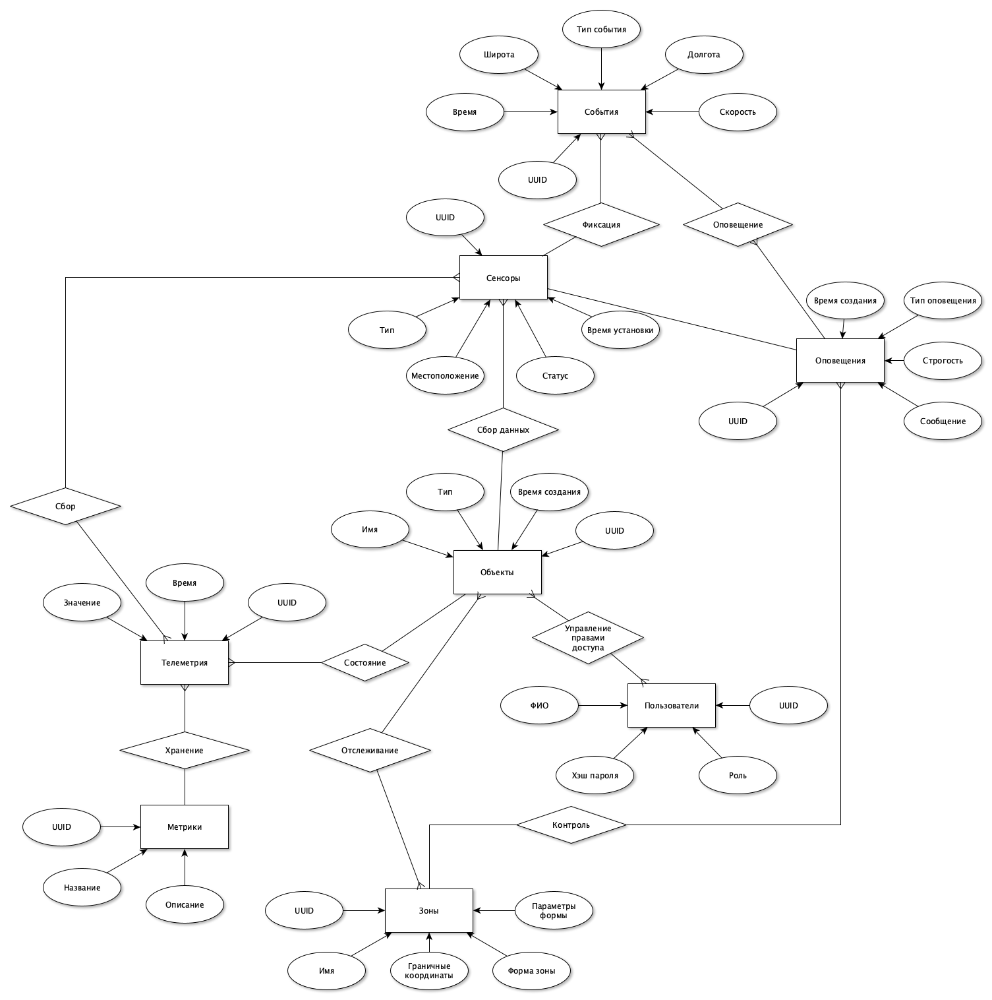

SensorTrack Pro
Система предназначена для мониторинга движущихся объектов (транспорт, грузы, техника) с помощью датчиков в реальном времени. Сервис анализирует данные телеметрии, отслеживает пересечение зон и автоматически генерирует оповещения при критических событиях. Решение позволяет оптимизировать логистику, повысить безопасность и сократить риски потери объектов.
Проект охватывает области логистики, транспорта и IoT-мониторинга. Система актуальна для компаний, управляющих автопарками, грузоперевозками или спецтехникой, где требуется контроль местоположения, состояния объектов и соблюдение маршрутов. Интеграция с датчиками и гибкие настройки зон позволяют адаптировать сервис под разные сценарии использования.
| Критерий | SensorTrack Pro | Аналог 1 (FleetMind) | Аналог 2 (GeoGuard) | Аналог 3 (TrackFlow) |
|---|---|---|---|---|
| Гибкость зон | Поддержка кругов, прямоугольников | Только круги | Прямоугольники | Статичные зоны |
| Типы метрик | Кастомизируемые метрики (ключ-значение) | Фиксированный набор метрик | Ограниченные метрики | Базовые метрики |
| Ролевая модель | 3 роли + гибкие права доступа | 2 роли (админ/оператор) | 1 роль (админ) | 2 роли без настройки прав |
Рост числа IoT-устройств и необходимость автоматизации логистических процессов делают проект востребованным. Текущие решения часто ограничены в гибкости настройки зон и метрик, что критично для нишевых задач (например, мониторинг температурных условий при перевозке медикаментов). SensorTrack Pro закрывает эти пробелы, предлагая кастомизацию под нужды бизнеса.

Сценарий 1: Оператор получает оповещение о выходе объекта из зоны
Сценарий 2: Администратор добавляет новую зону
ObjectZones. Сценарий 3: Аналитик формирует отчет по расходу топлива
Metrics. 
Описание типа приложения и выбранного технологического стека Для проекта SensorTrack Pro выбран тип приложения Web MPA (Multi-Page Application) с использованием следующего технологического стека:
Язык программирования: Python 3 Backend фреймворк: FastAPI - высокопроизводительный асинхронный веб-фреймворк для создания API ORM: SQLAlchemy - для работы с базами данных через объектно-ориентированный подход База данных: PostgreSQL - реляционная СУБД с поддержкой геопространственных данных (PostGIS) Frontend: HTML, CSS Контейнеризация: Docker для упрощения развертывания